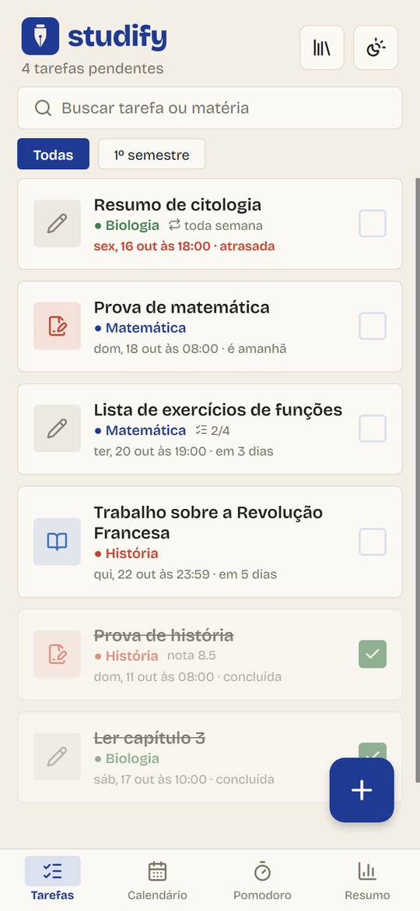
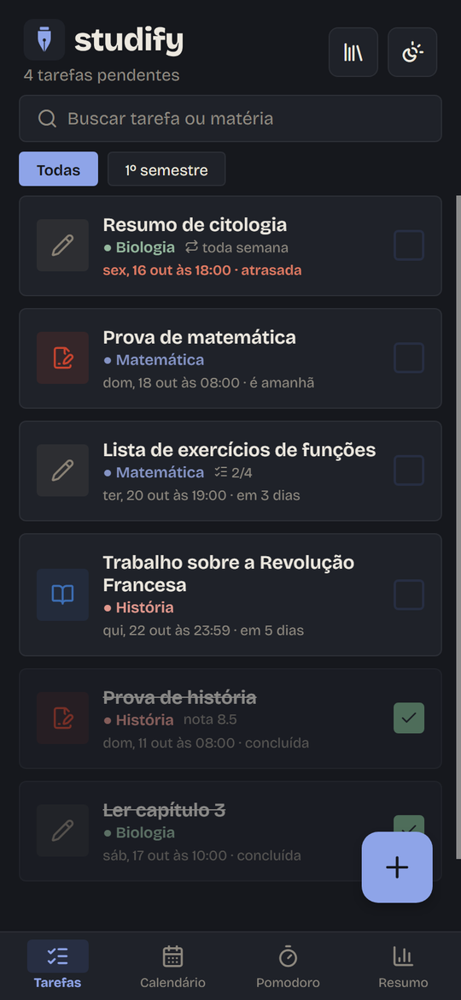
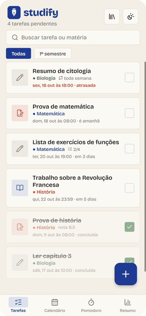
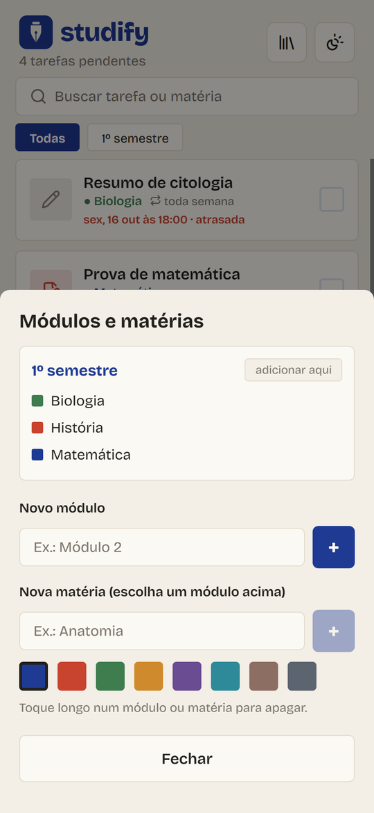
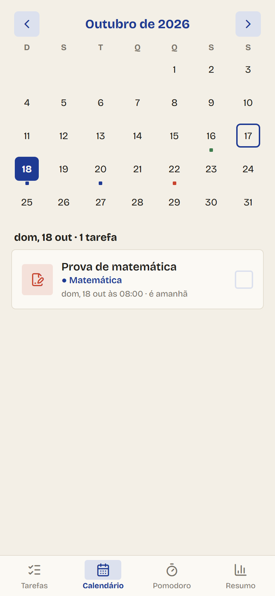
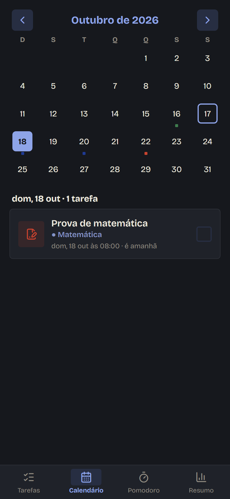
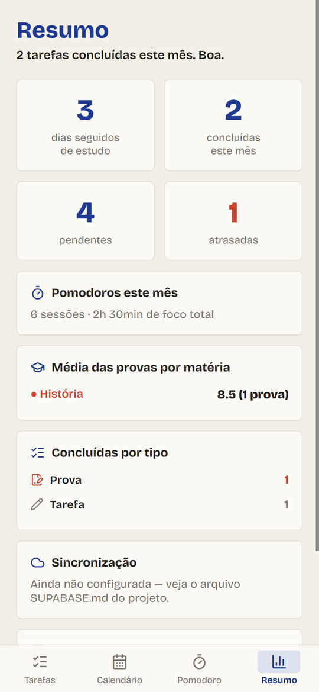
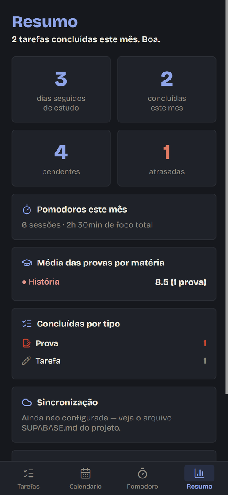
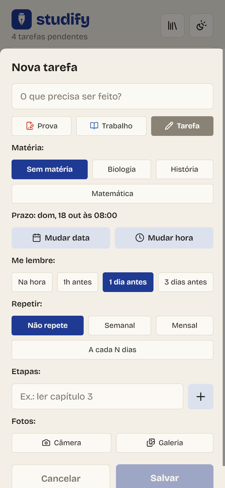
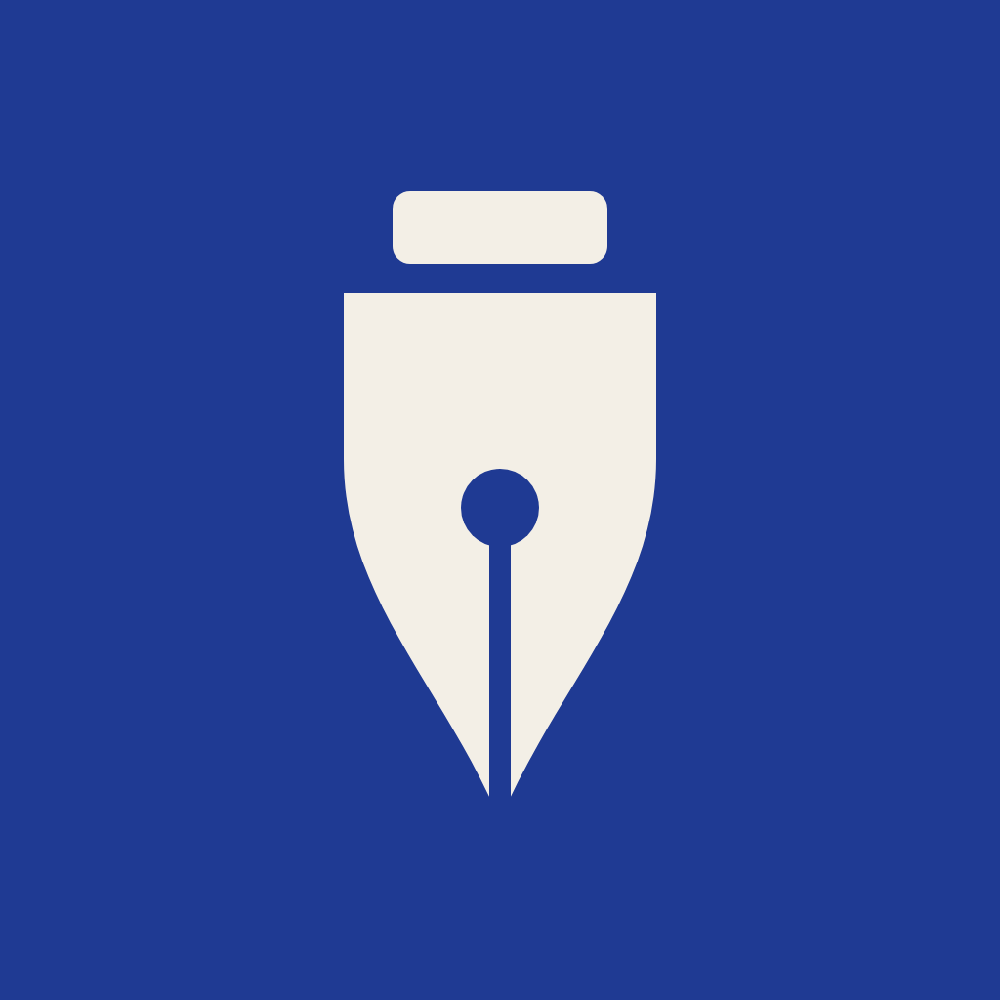

Você anota, o Studify avisa na hora certa e mostra como andam seus estudos. Abriu o app, sabe em dois segundos o que vence primeiro.


Da prova anotada ao lembrete na hora certa: o calendário do mês, o tempo de estudo e o seu progresso, tudo num lugar só.
Gravado direto do app: criar uma prova, riscar uma tarefa, trocar de tela e de tema.

Três passos, sem planilha e sem bloco de notas.
Crie módulos (semestre, bimestre, curso) e as matérias de cada um, cada uma com sua cor.
Toque no +, escolha o tipo, o prazo e o lembrete: na hora, 1 hora, 1 dia ou 3 dias antes.
Conclua com um toque, marque o tempo no cronômetro e veja no Resumo quantas tarefas fez e quantos dias seguidos estudou.
Crie um módulo, adicione as matérias e escolha entre 8 cores. Nos cards e no calendário, você bate o olho e já sabe de qual matéria é.

Toque numa matéria e veja tudo dela num lugar: a média com a regra do seu curso, as faltas, as avaliações, o caderno de anotações, as tarefas e o tempo de estudo.
Média simples, com pesos, soma de pontos, só as melhores notas ou com exame final. Ou escreva a sua própria fórmula.
Lance as notas que já saíram e o app mostra a média atual e o que você precisa tirar nas próximas.
Aulas no semestre, faltas e a sua presença em %, com aviso quando passa do mínimo.
Anotações por matéria, com fotos, salvas sozinhas enquanto você escreve.
Escolha a escala que a sua escola usa.
Avaliações, tarefas e provas da matéria e o tempo de estudo no cronômetro, na mesma tela.
Os dias com provas e entregas aparecem marcados na cor da matéria. Toque num dia para ver o que tem nele.


Escolha a matéria e dê o play. O cronômetro continua contando em qualquer aba, em segundo plano e com o app fechado. Ao zerar, o tempo vai para o Resumo.
Cada sessão fica anotada na matéria, e você vê quanto tempo deu a cada uma.
Marque trechos do estudo, como um capítulo ou uma lista de exercícios.
Trocou de aba ou fechou o app? O tempo continua certo quando você volta.
Concluídas, pendentes, atrasadas e a sequência de dias estudando. Lançou as notas? A média de cada matéria aparece aqui.


Avisos que funcionam com o app fechado e sem internet.
As próximas tarefas direto na tela inicial do Android.
Semanal, mensal ou a cada N dias, sem precisar recriar.
Fotografe o caderno ou a lousa e anexe na tarefa.
Exporte seus dados num arquivo e importe no celular novo. O app ainda lembra você de fazer.
Tranque com PIN e, se quiser, desbloqueie com a digital ou o rosto.
Prints reais do Studify. Use o botão do topo para ver no outro tema.

Tudo é guardado só no seu celular, e o app nem pede acesso à internet. Sem conta, sem nuvem, sem anúncio, sem rastreamento. Para trocar de aparelho, exporte um backup em arquivo e importe no novo.

Disponível para Android, em APK. Instale, crie suas matérias e lance a primeira prova.